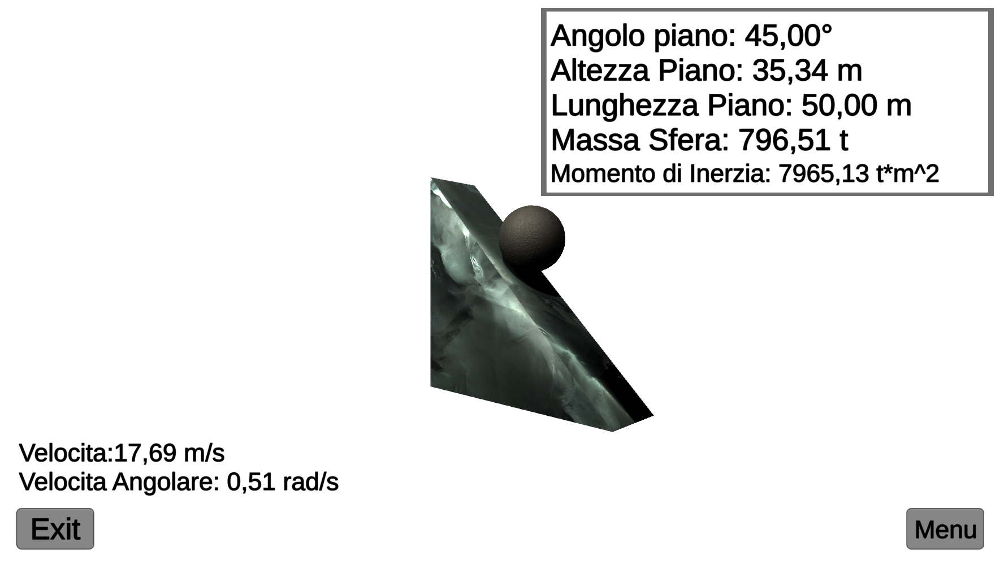

My Projects

A web application to supervise and analyze a social network
Made with:
A web application that provides tools to analyze and supervise a social network. The social network is the Community Based Activity Center, a component of the european project Essence to develop a health and mental care enviroment. The application analyzes the data product of the social network and provides a reasonable data visualization, it also provides tools to analyze the network formed between users with different metrics.

PIOF
Made with:
PIOF is an IoT device that provides a website and a local station to manage the watering of a garden. It's possible to set a daily or weekly periodic watering. The board also monitors the weather and adapts the watering schedule. The boards used for this system are two ESP8266: one used as weather station and the other as local controller/web server.
PIOF
Made with:
PIOF is an IoT device that provides a website and a local station to manage the watering of a garden. It's possible to set a daily or weekly periodic watering. The board also monitors the weather and adapts the watering schedule. The boards used for this system are two ESP8266: one used as weather station and the other as local controller/web server.

Vote system
Made with:
This application was developed as project for the course of Software Engineering in collaboration with my colleague Fazio Francesca. The software allows the user to create, or vote, a session for an election or a referendum. It also provides a way to vote in local seat with a simple GUI. All the data are stored inside a SQL database that allows a centralized managing of them. The GUI, devoleped using JavaFX and scene Builder, is designed to be simple and usefull also for not expert users.

Simulator of a inclined plane
Made with:
This simulator provides an easy way to test the inclined plane setting, with a value that can be changed dynamically both for it and for the sliding object. The project was made for learning purposes. The setting includes the material of both elements influencing the friction coefficient and the mass of the two. With the simple GUI the user can analyze how different materials interact in this scenario.